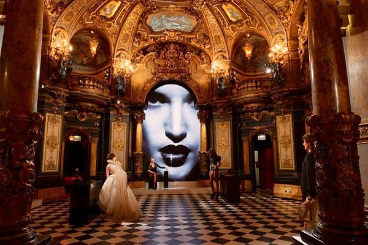
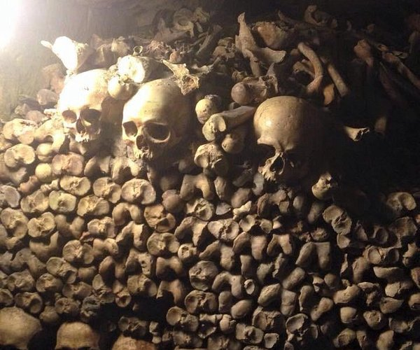

Explorez Paris
Les revenus influencent le choix des expériences présentées sur cette
page : en savoir plus.
Europe France Ile-de-France Paris
Paris: les immanquables
Guide de voyageurs

Best summer things to do in Paris | Eatwith
36 articles

Les 10 monuments et musées de Paris à faire
10 articles

Par Topito

Best summer things to do in Paris | Eatwith
10 articles
Par Eatwith